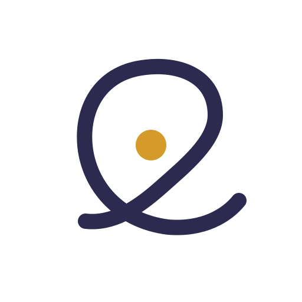
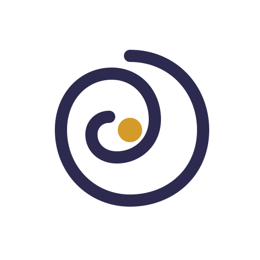
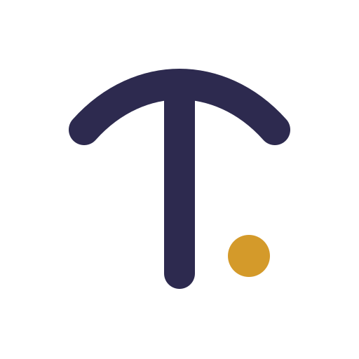

Opciones de diseño desprendidas de los cuatro briefs de las familias fundadoras para someter a votación y criterio.



Voz: Cálida, de libro antiguo y textura de madera. Equilibra el rigor académico con curvas profundamente amables.
Voz: Seria, poética y literaria. Da una imagen de colegio maduro y formal sin llegar a la frialdad bancaria.
Voz: Abierta, moderna y transparente. Comunica frescura e impecabilidad en gestión y organización.
| Fórmula | Composición Visual | Cuándo Usarla | Objetivo Estratégico |
|---|---|---|---|
| 1. Híbrida Equilibrada | Trekan COLEGIO WALDORF |
Firma principal, web header, fachada escolar. | Posiciona a Trekan como marca propia, manteniendo el respaldo Waldorf como categoría. |
| 2. Formal Institucional | Colegio Waldorf Trekan | Papelería legal, contratos, trámites ante el Mineduc y Google Search (SEO). | Claridad burocrática y de búsqueda directa para padres nuevos. |
| 3. Identidad de Comunidad | Trekan Educar es cuidar |
Polerones, bolsas de lino, redes sociales y eventos internos. | Fomenta el sentido de pertenencia sin sobreexplicar la metodología. |
| Criterio de Evaluación | Ruta A (Cobijo) | Ruta B (Hilo) | Ruta C (Monograma T) |
|---|---|---|---|
| 1. ¿Comunica cobijo y calidez sin parecer improvisado? | Excelente (10/10) | Muy Bueno (9/10) | Bueno (8/10) |
| 2. ¿Tiene identidad propia dentro del universo Waldorf? | Muy Bueno (9/10) | Medio (7/10) | Sobresaliente (10/10) |
| 3. ¿Resiste 16 px, bordado de polerón y timbre de madera? | Sobresaliente (9.5/10) | Sensible (6.5/10) | Insuperable (10/10) |
| 4. ¿Evita clichés (árbol, hoja, sol, corazón, arcoíris)? | 100% Libre de Clichés | 100% Libre de Clichés | 100% Libre de Clichés |